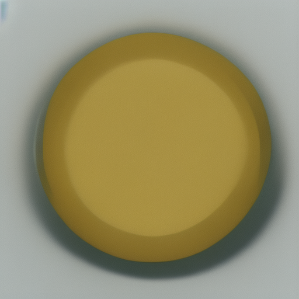
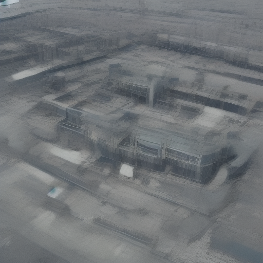

◈
AI chat assistant
Ask questions and receive AI-powered responses through the desktop conversation interface.
NOAMIC combines conversational AI with local desktop behavior, voice interaction and memory in a compact research project.
Ask questions and receive AI-powered responses through the desktop conversation interface.
Use your microphone to interact with NOAMIC without typing. A dedicated Mic control exposes the voice path directly.
NOAMIC can speak responses, creating a more assistant-like experience than text-only interfaces.
Context-aware conversation memory helps the assistant keep continuity across an interaction.
Local intent handling allows selected actions to be handled on the computer rather than sending every interaction to an AI service.
NOAMIC can directly open YouTube and navigate to a particular video the user asks to watch, when the configured desktop action is available.
Image-generation experiments show NOAMIC's potential beyond conventional question-and-answer workflows.
A purpose-built dark interface exposes system state, thinking, listening and response modes clearly.
The project is intentionally experimental: a place to test semantic agents, local actions and personal-computing AI ideas.
NOAMIC's voice layer is built around microphone input and speech output. The interface also exposes an Assistant Mode for a more continuous voice-oriented interaction.
NOAMIC is not marketed as a completely offline replacement for cloud AI. Its local commands and voice-related components can reduce dependence on online services, while advanced AI responses require an internet connection in the current public release.

